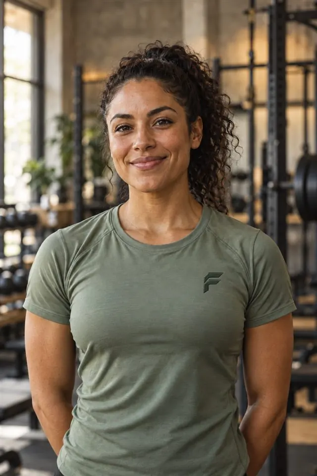

← Back to our teamNadia
CONDITIONING / ENDURANCE
Nadia
Reyes.
Performance Coach
Conditioning should challenge you without losing sight of the person doing the work.
Find a session ↗
“Find a pace you can come back to.”
Nadia Reyes / Performance Coach
THE APPROACH
Attention to
the individual.
Nadia brings energy to the room while making space for different starting points. Her sessions emphasize pacing, movement options and building a sustainable aerobic base. Effort is adjusted from real member feedback, rather than a one-size target.
WHAT TO EXPECT
A purposeful
session.
- 01 / Set the paceTalk through your current activity, preferences and available time.
- 02 / Train with optionsChoose from walking, cycling, rowing and coach-led conditioning intervals.
- 03 / Reflect and recoverReview how the session felt and plan a manageable next step.